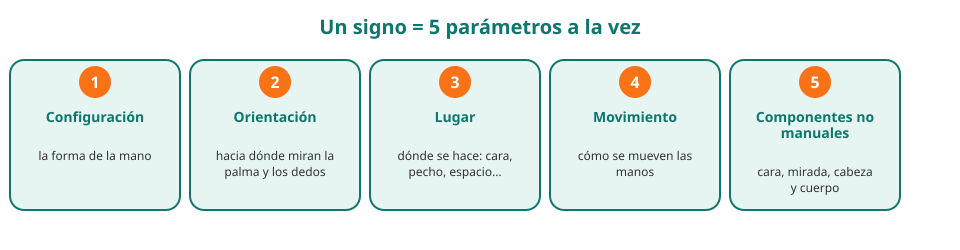
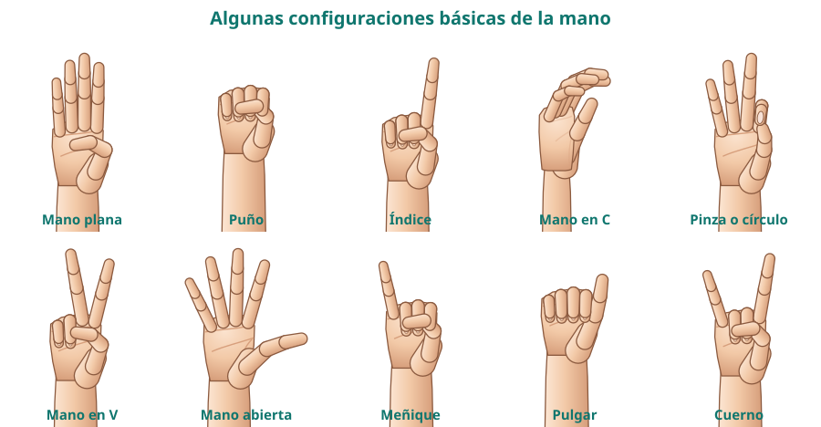
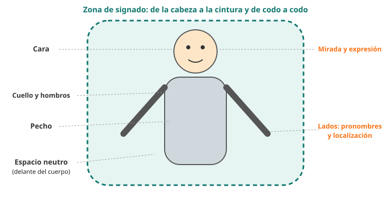

Módulo 3: La LSE: una lengua completa
Qué es la lengua de signos española, en qué se parece y se diferencia de la lengua oral y cuáles son sus cinco parámetros.
La lengua de signos española (LSE) es una lengua natural, con gramática y vocabulario propios, que se produce con las manos, el cuerpo y la cara y se percibe con los ojos. No es el español «con las manos».
Cómo es la LSE
1. Lengua visual, lengua gestual
Las lenguas orales usan el canal oído-voz; las de signos, el canal vista-cuerpo. Por eso se llaman lenguas visogestuales. Puedes decir muchas cosas a la vez (por ejemplo, la mano dice «coche» y la cara dice «¡qué rápido!»), algo que en la lengua oral se hace en secuencia.
| Lengua oral (español) | Lengua de signos española | |
|---|---|---|
| Canal | Voz y oído | Manos, cuerpo y cara; vista |
| Unidad básica | Palabra | Signo |
| Orden | Sucesivo (una palabra detrás de otra) | Sucesivo y simultáneo (varias cosas a la vez) |
| Gramática | La del español | Propia (no copia la del español) |
| Escritura | Español escrito | No tiene escritura habitual (existen notaciones técnicas) |
2. LSE, LSC y otras lenguas de signos
En España hay dos lenguas de signos reconocidas: la LSE (lengua de signos española, usada en gran parte del país) y la LSC (lengua de signos catalana). Dentro de la LSE hay variantes regionales, igual que hay acentos y palabras distintas en el español. Y en otros países hay otras lenguas distintas: ASL (EE. UU.), BSL (Reino Unido), LSF (Francia)… No son traducciones unas de otras.
3. Los cinco parámetros de un signo
Igual que una palabra se forma con sonidos, un signo se forma combinando cinco parámetros. Si cambias uno, puede cambiar el significado.

| Parámetro | Qué es | Ejemplo de cambio |
|---|---|---|
| 1. Configuración | La forma de la mano (puño, mano plana, índice…) | Misma posición y movimiento con otra forma de mano = otro signo |
| 2. Orientación | Hacia dónde mira la palma o los dedos | Palma hacia arriba o hacia abajo puede cambiar el sentido |
| 3. Lugar de articulación | Dónde se hace: cara, frente, pecho, espacio neutro… | El mismo movimiento en otra zona puede significar otra cosa |
| 4. Movimiento | Recto, circular, repetido, con rebote… | Repetirlo puede indicar plural o continuidad |
| 5. Componentes no manuales | Expresión de la cara, mirada, cabeza y hombros | Una misma frase puede ser pregunta, afirmación o negación |

4. El espacio de signado
Los signos se hacen en un espacio delante del cuerpo, desde la cabeza hasta la cintura y de codo a codo. Cada zona tiene sus usos: la cara para sentidos y emociones, el pecho para el «yo», el espacio neutro para describir y conversar.

⚠️ Errores frecuentes y cómo corregirlos
| Lo que pasa | Por qué | Cómo corregirlo |
|---|---|---|
| Signar mirando a tus manos | Es lo natural al aprender | El interlocutor mira tu cara; tú también debes mirar a la suya |
| Mover solo las manos con cara seria | Concentración | Sin expresión la frase pierde parte de su significado |
| Pensar «una palabra = un signo» | Parece una traducción simple | La lengua de signos tiene su gramática; se aprende por ideas, no palabra a palabra |
🧩 ¿Cuántos parámetros forman un signo?
🧩 ¿La LSE es el español hecho con las manos?
🧩 ¿Qué papel tiene la cara al signar?
🗓️ Practica los parámetros
- Elige cuatro objetos o acciones sencillas (por ejemplo beber, comer, mesa, casa).
- Imagina cómo los harías con las manos: ¿qué forma de mano, dónde, qué movimiento?
- Compáralos con los signos oficiales de un diccionario de LSE (módulo 10) y apunta qué parámetros coinciden.